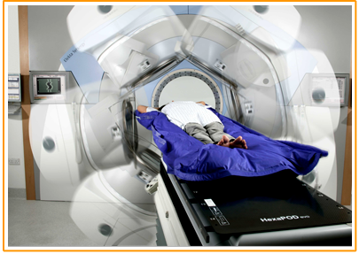

Setting the standard for confident care
Elekta Synergy system was the first linear accelerator to bring 3D image guidance into the treatment set up process. The system is equipped with imaging tools that help clinicians visualize tumor targets and normal tissue, and their movement between and during fractions. The integration of this technology in the Elekta Synergy gantry enables physicians to perform imaging with the patient in the treatment position at the time of treatment, to optimize patient setup before therapy.
New opportunities for healthy life
- Preset driven and inline reconstruction
- Large field-of-view (largest commercially available)
- Advanced registration tools with the Intuity* package
- 4D/3D and 2D imaging in kV
- 2D MV imaging at the time of treatment
Key imaging tools include 3D and 4D volumetric cone-beam imaging for soft tissue visualization; 2D real-time, fluoroscopic-like imaging for targets that move frequently; and 2D kV imaging for standard and orthogonal planar imaging.
Elekta Synergy also features sophisticated ultra-low leakage field shaping with a fully integrated multileaf collimator, in addition to a 40 x 40 cm uninterrupted field size to simplify and refine treatment of larger-field targets.
Key imaging tools include 3D and 4D volumetric cone-beam imaging for soft tissue visualization; 2D real-time, fluoroscopic-like imaging for targets that move frequently; and 2D kV imaging for standard and orthogonal planar imaging.